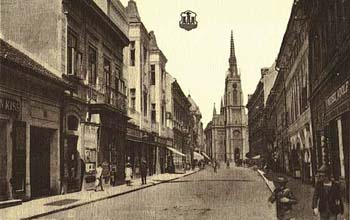

Novosadska kuvarica, 2. deo
"Podsticaj da napiše 'staru i novu kujnu' dali su joj rođaci njenog supruga, preduzimljivi knjižari braća Ćira i Đoka Popović. Pri pisanju služila se, kako je rekla, beleškama svoje matere Natalije-Nančike Petrovićke, koja je bila 'na glasu sa svoje veštine u kuvanju'.
Iskoristila je i iskustva svojih mnogobrojnih prijateljica, a imala je pri ruci i najbolje strane kuvare i recepte iz evropskih ženskih listova. Za korisnike njenog kuvara od značaja je bilo to što je ona sve recepte 'i sama okušala', te je njena preporuka da je kuvar 'pouzdani rukovođa svakoj domaćici', primana s velikim poverenjem.
Knjiga je prvi put izašla 1878, a onda je ponovo objavljivana, u više navrata.
Poslednji put je izdata u luksuznom reprintu 1990. godine koji je, kako Enciklopedija piše, 'oplemenjen i nadograđen zanimljivim prilozima o autorki, njenoj porodici, o delu i vremenu u kojem je nastalo.' Prema informacijama sa neta, knjige više nema u knjižarama.
Ali je ostao recept za stolverk bonbone:
"U šerpenju se uspe 1 litra mleka da se kuva; čim provri saspe se unutra na vrh noža soda bikarbone, zatim 30 dkg od glave sečena, utucana i prosejana šećera, i 20 dkg tzv. 'krompir
šećera' (Traubenzucker); sve se izmeša ostavi da vri 3/4 časa. na nekoliko minuta pre toga vremena dodaju se 3 velike kašike jake skuvanje crne kave i pusti da i sa ovom malo provri.
potom se saspe u tepsiju koja se dobro namaže slatkim maslom ('puterom'); kad se ohladi,
metne se ponovo na nekoliko trenutaka u pećnicu ('rernu').; pa se onda u tepsiji seče na
jednake male četvorokute od kojih se svaki zamota u tanku pergament hartiju."
Mislim da je tada pitanje 'šta hoćeš, bonbonu?' imalo jedan ozbiljan smisao, a ne ovo, kao sad.
Još slika starog Novog Sada ovde.
Novosadska kuvarica, 1. deo, je ovde
Komentari
WOW!Fantasticno!!!Ima li gde da se kupi taj kuvar?
A photos of old N.S;..gde si ih nasla?
Meni je ovo super i zanimljivije od bilo kakvog Exita(na stranu,sto ne znam ni sta je to.Cula sam,ali nisam pridavala paznje)
Ima lii treci deo of this story?
Marina | 06.07.06 12:46
Knjige koliko sam uspela da doznam nema, mada ko zna, mozda u nekim antikvarijatima. O njoj sam prenela prakticno sve sto ima. Mozda jedino iskopam neku novu heroinu
La Lara | 06.07.06 12:59
HVALA za ove lepe tekstove. Proradio mi apetit. :)
Nego, jesi li pregledala ceo sajt http://www.peterwardein.com ? Mene je odusevio a sve slike su prelepe. Taman da mi pojacaju nostalgiju. :)
 Maja | 07.07.06 09:10
Maja | 07.07.06 09:10
Hvala na lepim komplimentima o nasem sajtu!!!
 Redakcija | 10.05.07 14:17
Redakcija | 10.05.07 14:17
 RSS feed
RSS feed
 sadržaji se objavljuju pod
sadržaji se objavljuju pod
Komentari
nisam razumjela nista od ovoga
snezana | 13.09.07 12:45
Pogledajte i prvi deo: http://yahti.com/2006/07/novosadska_kuvarica.html
La Lara | 13.09.07 12:51